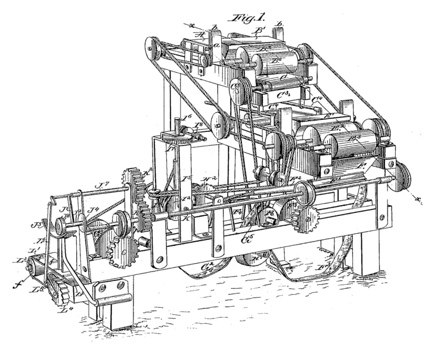

Локі
Локі Лейфейсон — скандинавський бог бешкетування, жартів та обману, син Фарбауті і Лауфі, та описується як «винахідник обману». Локі в певному сенсі є одночасно богом та йотуном (Титани і Гіганти скандинавської міфології), оскільки він був із богами протягом довгого часу.
Читати далі
НМТ
Як зазначалося вище, не існує правил, які регулюють створення цього типу тексту, але їх можна класифікувати на 10 різних типів, які будуть визначені таким чином, щоб при їх використанні було краще знання кожного, і це також буде бути зрозумілішим, коли використовувати кожен з них.
Читати далі
Дрогобицький ліцей
Згідно з рішенням Львівського облвиконкому №240 від 28 серпня 1989 року було відкрито Обласний спеціалізований фізико-математичний клас для педагогічно обдарованих дітей сільських шкіл на базі Дрогобицького державного педагогічного інституту і СШ №16 Дрогобича.
Читати далі

Машина
Маши́на — технічний об'єкт, який складається із взаємопов'язаних функціональних частин (деталей, вузлів, пристроїв, механізмів та ін.), що використовує енергію для виконання покладених на нього функцій. Традиційно, під машиною розуміють технічну систему, яка виконує або допомагає у виконанні якогось виду роботи. Проста машина — механізм, який перетворює напрям або величину сили без споживання енергії.
Читати далі

css властивість display
У HTML тип блоку без задання виставляється браузером згідно із актуальною версією специфікації або його налаштувань. У XML значенням без задання для всіх елементів є inline. Додатково до різних типу блоків, існує значення none, яке приховує елемент зі сторінки та прибирає його з потоку - так ніби його і не було. Властивість display задається з використанням значень ключових слів. Значення ключових слів згруповані за шістьма категоріями
Читати далі
Сільві
Сільві Лафейдоттір — персонаж з медіафраншизи Кіновсесвіту Marvel, зображена Софією Ді Мартіно, частково заснованою на персонажах Леді Локі та Сільві Лаштон із Marvel Comics. Вона є альтернативною версією Локі, яка допомагає йому боротися за поваленням УВА у серіалі Локі.
Читати далі